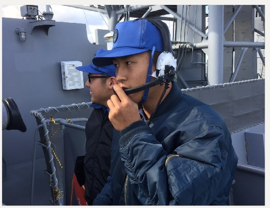
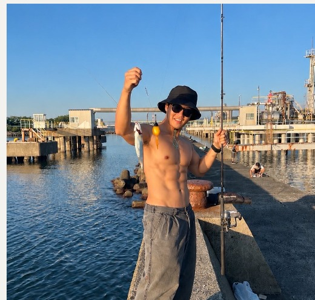
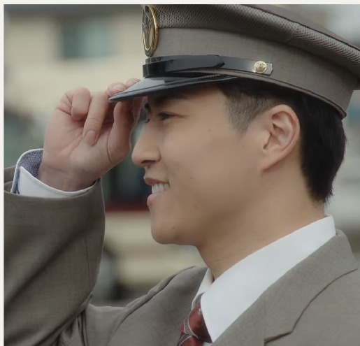
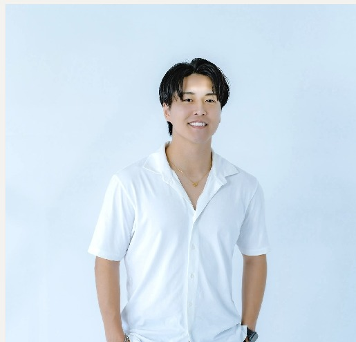
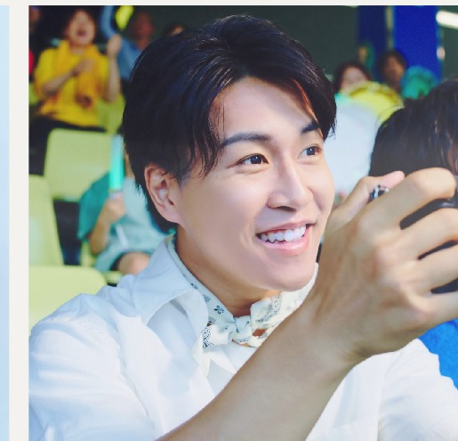

170cm身長
74kg体重
1998生年
福井出身
プロフィールPROFILE
17歳で海上自衛隊に入隊し、護衛艦「ありあけ」の乗組員として不審船警戒監視任務に従事。厳しい訓練と共同生活の中で、規律・責任感・精神力を培う。 訓練では怪我人役を演じた際、上官から「今まで会ってきた人間の中で一番リアルな怪我人」「本当に怪我をしていると思った」と高く評価されたことをきっかけに演技の面白さに魅了され、俳優を志す。 現在は福井県を拠点に俳優・タレントとして活動するほか、SNSクリエイターとしても活動。2025年には「福井で演技の機会を増やしたい」という想いからショートドラマプロジェクトを立ち上げ運営中。
基本情報
- 生年月日
- 1998.3.30
- 出身地
- 福井県
- 血液型
- A型
- サイズ
- B103 / W86 / H99
- 拠点
- 福井県（東京にも定期滞在）
- 運転免許
- 普通自動車
特技
資格・特徴
経歴CAREER
- 小学生麻生津小学校 合唱団団長／全国大会2位
- 高校足羽高校 卒業／生徒会所属
- 卒業後海上自衛隊 入隊（佐世保基地）
- 在隊中護衛艦「ありあけ」乗艦／警戒監視任務
- 19歳フィジーク大会 出場（6位入賞）
- 21〜26歳動画制作事業で開業／株式会社meme・XRice 設立
- 現在タレント活動を本格化／防災士 取得予定

出演実績WORKS
TV / テレビ
| バズって福井SP | 福井テレビ |
| 福アワセ｜福井フェニックスまつり×あわら湯かけまつり | ケーブルTV |
| 福アワセ｜世界に誇る福井のメガネを知る旅 | ケーブルTV |
MC・イベント
| 晴れフェス | 2024・2025・2026 MC |
| スキージャム勝山 | 2025・2026 ゲレンデDJ |
モデル
| 栄月 | |
| 鯖江精機 | |
| 株式会社オームラ | YouTubeモデル |
CM
| 京福バス｜3作品連続 | 主演 |
| ボートレース三国 | 主演 |
| 小林大伸堂 | 主演 |
| 鯖江精機 | 出演 |
| 福井県FWI「社長に会いに行こう篇」 | 出演 |
| ヨシケイ開発株式会社 | 出演 |
写真GALLERY




お問い合わせCONTACT
TV・CM出演、イベントMC、SNS案件等のご相談はお気軽にご連絡ください。